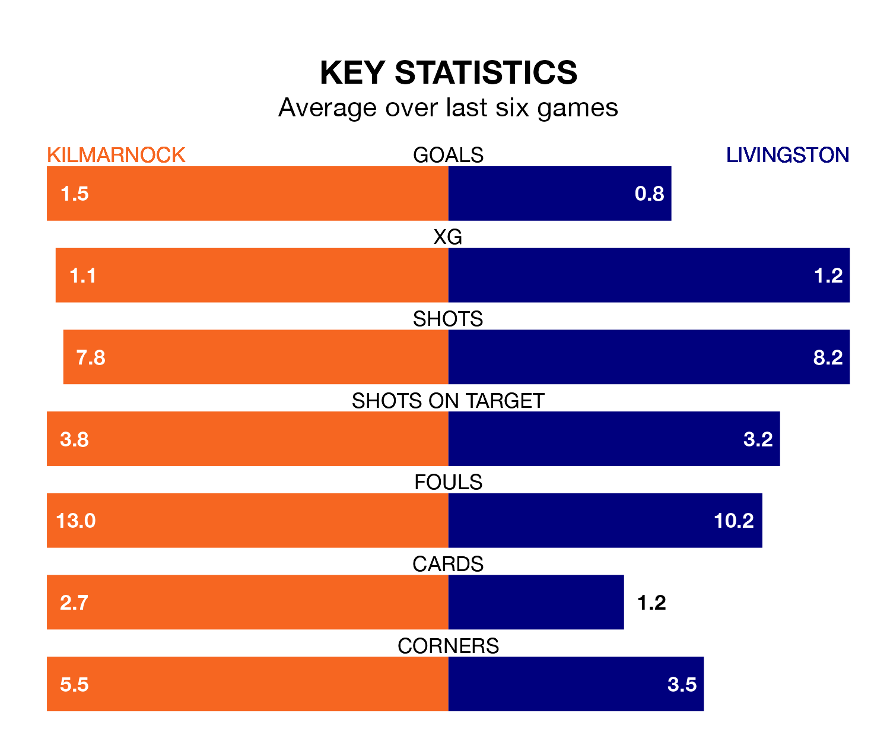

Relegation candidates Livingston face a challenge away against high-flying Kilmarnock at the BBSP Stadium Rugby Park on Wednesday.
Livingston are rooted to the bottom of the Premiership table, and have picked up just two wins and seven draws in their 24 games to date.
Killies, meanwhile, are fourth in the standings with 33 points, having won eight and drawn nine, and are 25 points behind table-toppers Celtic.
Kilmarnock are in mixed form in Premiership, with two wins and three draws from their last six games.
With no wins and two draws over that period, Livingston's form is much worse – they have taken two points from 18, compared to Killies's nine.
In the last 10 years, Kilmarnock and Livingston have played each other on 14 occasions. Kilmarnock won five of them, Livingston seven, and they drew twice.
On average, Killies scored 1.1 goals and Livingston 1.3 in those matches.
Their last meeting was on December 16, when they played out a 0-0 draw.
With 15 goals in 24 games so far this season, the visitors are the league's lowest scorers with 0.6 goals per game. And they are conceding more than average, letting in 41 goals at a rate of 1.7 per game.
The home side are also below average scorers, with 1.1 goals per game, compared to a league average of 1.3. They have also conceded 1.1 goals per game.
In Will Dennis, Kilmarnock can rely on one of the league's safest pair of hands. He has kept eight clean sheets in his 23 appearances this season in Premiership.
In Livingston's net, Shamal George has four clean sheets in 18 games. He has conceded a goal every 62 minutes, 60% more often than the 101 minutes between goals for Dennis.
Kilmarnock's last match was on Saturday, a 1-1 draw against Motherwell, with Lewis Mayo getting the goal for Killies.
Livingston lost 3-0 against Rangers last time out, also on Saturday.
Wednesday's match will be refereed by David Dickinson, who has taken charge of 12 Premiership games so far this season, issuing one red card and booking 52 players. He has awarded two penalties.
The last Kilmarnock game Dickinson refereed was a 2-2 home draw with Dundee on December 30. His last Livingston match was their 2-1 loss at home against Hearts on January 2.
Updated: 13:52 (UTC), 05/02/24